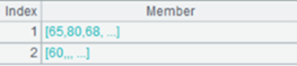
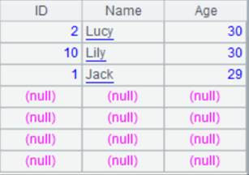
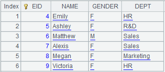

Description:
Create an index table for the key of a table sequence.
Syntax:
T.index(n)
Note:
The function creates an index table, whose length is n, on the basic key of table sequence T. Records with same time key value could be placed at the same index address. The index table will be cleared if n=0, or when the table sequence’s key is reset; the index table’s length will be automatically identified if n isn’t supplied. An index table can help speed up the key-based data query process.
To create an index table, we assume that the records’ primary key values are unique, otherwise error will be reported. Create HASH table only according to the basic key and arrange records having different time key values in the same HASH location.
Parameter:
|
T |
A table sequence with a key |
|
n |
Index length |
Option:
|
@s |
Create a multilevel tree-structured index and ignore parameter n if the table sequence’s basic key is serial byte values |
|
@m |
Enable parallel processing |
|
@n |
Create an ordinal-number index for the table sequence; the index is used for numberizing the foreign key. Foreign key numberization requires that foreign key values of the fact table correspond to ordinal numbers of the dimension table’s records; the ordinal number key can be omitted when using the index, and ignore parameter n when the option works. The option is not fit for a table sequence containing a time key |
Return value:
Table sequence
Example:
|
|
A |
|
|
1 |
=demo.query("select EID,NAME,SALARY from EMPLOYEE where EID<4") |
|
|
2 |
=A1.keys(EID) |
Set EID as A1’s key |
|
3 |
=A1.index(10) |
Create an index table for the table sequence’s key; the length is 10 |
|
4 |
=A1.index@m(100) |
Create an index table using parallel processing |
Create a multilevel tree-structured index:
|
|
A |
|
|
1 |
=3.new(k(~:2):id,~*~:num) |
Create a table sequence where id field is serial byte type |
|
2 |
=A1.keys(id) |
Set id as A1’s key 
|
|
3 |
=A2.index@s() |
As A1’s basic key is serial byte type, use @s option to create a multilevel tree-structured index |
Create an ordinal-number-based index:
|
|
A |
|
|
1 |
=connect("demo").query("SELECT * FROM CITIES") |
Return a table sequence  |
|
2 |
=connect("demo").query("SELECT * FROM STATECAPITAL").keys(STATEID) |
Return a table sequence and set EID as the key  |
|
3 |
=A2.index@n() |
Create an ordinal-number index for A2’s table sequence |
|
4 |
=A1.switch(STATEID,A3) |
CITIES table acts as the fact table and STATECAPITAL as the dimension table; convert values of STATEID, the CITIES’s key, to corresponding referencing records in STATECAPITAL. The index table on foreign key STATEID is used during the computing process, so the ordinal number key STATEID is omitted from the expression, which is equivalent to A1.switch(STATEID,A3:#) |
Related function: